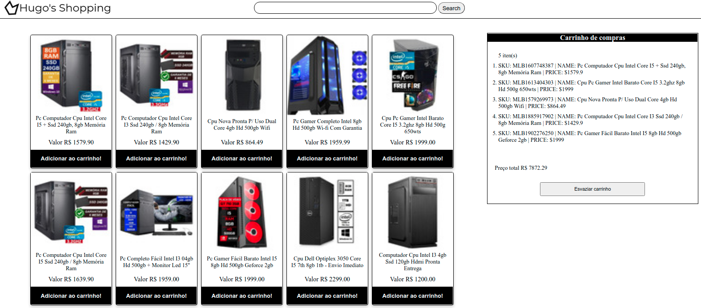
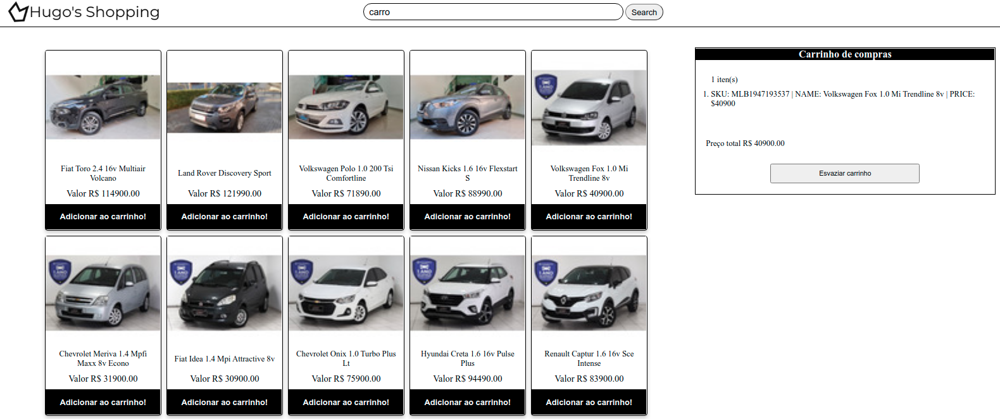

Hugo's Shopping
Descrição do Projeto
Hugo's Shopping é uma adaptação do projeto Shopping Card do curso da Trybe.
Esta aplicação é a simulação de uma loja online ultilizando a API do Mercado Livre para buscar os produtos de forma assíncrona e podendo adicionar, remover, pesquisar produtos por nome e adaptado para manter o progresso de compras salvo no navegador.
Na aplicação Hugo's Shopping foi
utilizado JavaScript para manipular o DOM, fazer requisições a API, CSS para estilizar e HTML para com contúdo
de texto.
← Voltar ao portifolio